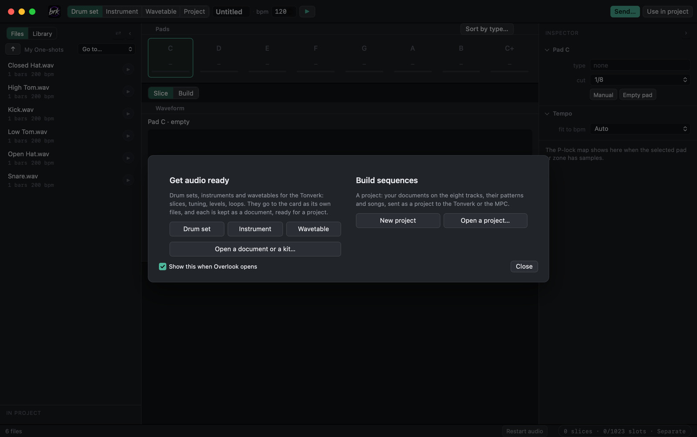
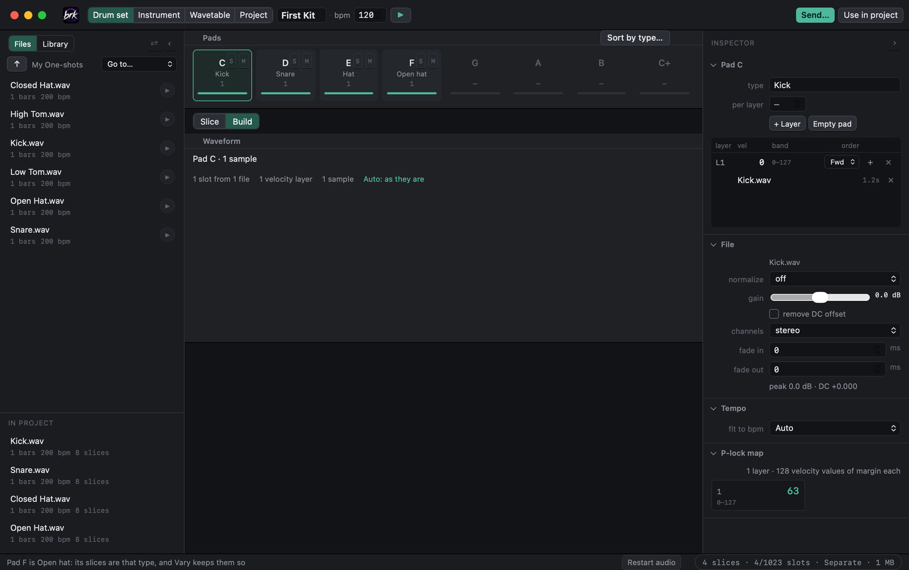
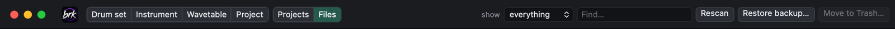
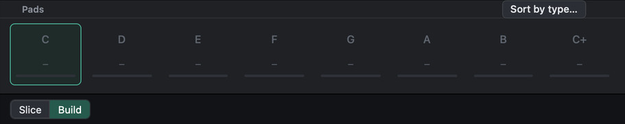
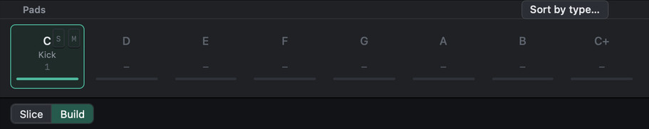
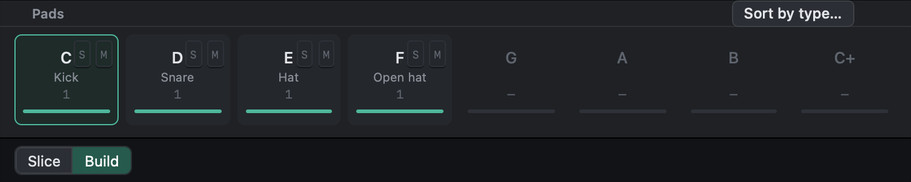
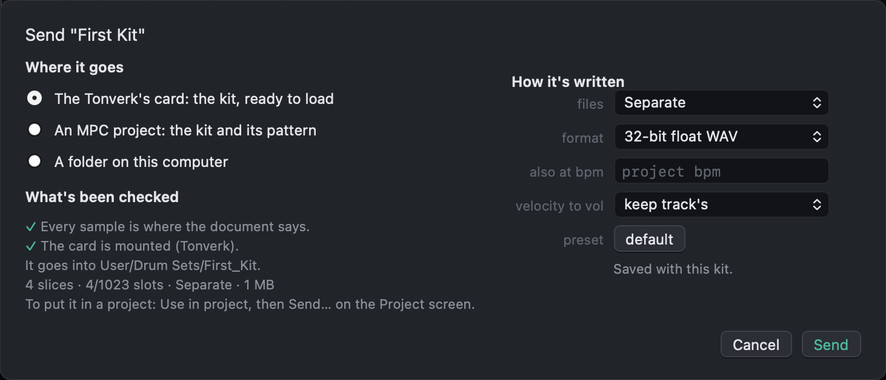
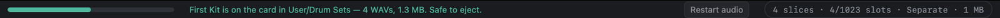
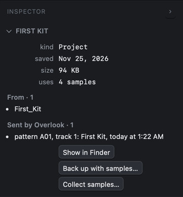

Overlook manual · draft
Part 1: The basics
This is a draft, for Overlook 0.9.3. It's being rewritten from the ground up after buyers on the Elektronauts forum said the old manual tells you what everything is, but not how to get things done. This part is the start: read it in order, from zero.
If something here is unclear, or your Tonverk shows something different, say so in the Elektronauts thread, or email support@brkbeats.dev.
Every job in this manual has the same shape: what you'll end up with, what you need, numbered steps, one action each, with You should see: after the ones where something changes, then what to do if it doesn't look like that.
1. What's what: the words this manual uses
The Tonverk and Overlook use a few words in a precise way. This page is all of them. You don't need to learn it before you start; come back when a word in another chapter isn't clear.
On the Tonverk
The card. The Tonverk's SD card. Everything the Tonverk plays lives on it: your sounds, your projects, and Elektron's factory library. The Tonverk and your computer can't use the card at the same time. To work on it from the computer, put the Tonverk in USB disk mode: the card appears on the computer as a drive, and the Tonverk stops playing until you eject the card and leave disk mode.
Project. What you load on the Tonverk to play. A project holds 128 patterns, its songs, and which sound each track uses. It doesn't hold any audio. It points at its samples by where they are on the card, the way a playlist points at songs. That's why moving or renaming a sample on the card breaks every project that uses it.
Pattern. One of a project's 128 slots, A01 to H16 (eight banks of sixteen). A pattern has 16 tracks:
Tracks 1 to 8 are the audio tracks. Each has one machine (below), which decides what it plays: a whole drum set of eight sounds, an instrument, a wavetable or a single sample. Any of them can be a MIDI track instead, playing other gear.
Tracks 9 to 16 are four buses, three send effects and the mix. Overlook leaves those as they are.
Trig. A step in a pattern that plays. On the Tonverk you set trigs with the sixteen keys; in Overlook you click a step.
Machine. What an audio track uses to play its sound. Overlook makes sounds for three of them:
| machine | plays | on the card it's |
|---|---|---|
| Subtracks | a drum set: eight sounds, each on its own subtrack | an .eldrum file and its samples |
| Multi Player | an instrument: samples across a keyboard | an .elmulti file and its samples |
| Wavefinder | a wavetable | a .wav file of single-cycle waves |
A fourth, Single Player, plays one sample. Overlook plays and copies Single Player tracks in your Tonverk projects, and a single file you put on a track of an Overlook project goes to the card as it is (chapter 8).
Audio files. Overlook opens WAV, AIFF, FLAC, MP3 and CAF files. What goes to the card is always something the Tonverk plays: a kit's samples are written as WAV or FLAC (you choose on the Send page), and a single file goes as it is, except an MP3, 32-bit float AIFF or CAF, which is made a WAV first, the same sound sample for sample.
Drum set (also called a kit). Up to eight sounds, played by the Subtracks machine. Overlook calls the eight places pads. A pad can hold one sample, or many: different samples for soft and hard hits (velocity layers), samples that take turns (round robins), or the pieces of a loop (slices).
Instrument. Samples spread across a keyboard, each playing a range of keys, played by the Multi Player.
Wavetable. A row of single-cycle waves the Wavefinder sweeps through.
Preset. A track's whole sound saved under a name: the drum set or instrument plus the track's settings (filter, envelope, effects). Load it on any track of any project.
Sample. One audio file.
In Overlook
Document. A drum set or an instrument as you work on it in Overlook, saved as an .ovlk file on your computer. It remembers which files you used, how they're cut, and what's on each pad or key. When you save it, Overlook copies the audio it uses into a folder beside it, so the document still opens if the original files move.
Overlook project. Your documents on the eight audio tracks, with their patterns and songs, saved as an .ovlkset file on your computer. It isn't on the Tonverk until you send it. Sending turns it into a Tonverk project.
Send. Writes what you made in Overlook onto the card, in the Tonverk's own files: a document becomes an .eldrum or .elmulti with its samples; an Overlook project becomes a Tonverk project. It can also write an MPC project, or files into a folder on your computer. SP-404MKII projects are coming in a later update.
Two kinds of project. A Tonverk project is on the card, and is what the Tonverk loads. An Overlook project is on your computer, and is how you build one. This manual always says which.
2. Where things live: the card, and your computer
On the card
Open the card on your computer and you'll see two folders:
User/ everything that's yours
Drum Sets/ drum sets (.eldrum), each in a folder with its samples
Multi-sampled Instruments/ instruments (.elmulti), each in a folder with its samples
Single Samples/ samples on their own
Wavetables/ wavetables
Recordings/ what you sampled on the Tonverk
Presets/ presets
Projects/ one folder per Tonverk project
Elektron/ the factory libraryTwo rules keep a card healthy:
Don't move or rename anything a project uses. The project only knows where its samples were. Overlook's View › Tonverk Card, on the Files tab, shows which projects use each folder before you touch it (chapter 12).
Leave the Elektron folder alone. It's the same on every Tonverk. Overlook reads it, never changes it, and never copies it into a backup, since every card already has it.
On your computer
Overlook keeps everything it makes in Documents › Overlook:
| what | where |
|---|---|
| your documents and Overlook projects | Documents › Overlook, or wherever you save them |
| the audio a document uses | a folder beside the document, named after it: BrkbeatsKit.ovlk keeps BrkbeatsKit Audio |
| a copy of the card's projects (no audio) | Documents › Overlook › Tonverk Card |
| a backup taken before Overlook changes a Tonverk project | Documents › Overlook › Tonverk Backups |
| what you record into Overlook | Music › Overlook › Recordings |
The copy of the card is made by itself every time the card is mounted. It holds every project, but none of the audio. It's why you can look through your projects and patterns in Overlook while the card is back in the Tonverk. It's a convenience, not a backup: for a real backup with the samples, see chapter 6.
When Overlook writes to the card
Most of what you do in Overlook only reads the card. It writes to the card only when you ask it to, with one of these:
Send… to the Tonverk's card (a kit, or a project)
Copy pattern (View › Tonverk Card, Projects tab)
Write to project (a track's knobs)
Restore backup…
Collect samples…
Move to Trash…
Each one checks first, backs up a Tonverk project before changing it, and ends with Safe to eject in the status line at the bottom of the window. Wait for those words before you eject the card.
3. The window
The Start window

When Overlook opens, it asks what you've come to do:
Get audio ready. Drum set, Instrument or Wavetable starts a new one, to go to the card. Open a document or a kit… opens one you have: an Overlook document, a kit from the card (
.eldrum,.elmulti), or another sampler's instrument.Build sequences. New project and Open a project… are for putting your documents on tracks, with patterns and songs (chapter 8). Projects you've opened before are listed under them.
Untick Show this when Overlook opens to go straight to a new drum set each time. View › Start… brings the Start window back.
The main window

Five parts:
The toolbar, across the top.
On the left are the four things you make: Drum set, Instrument, Wavetable and Project. The lit one is on screen.
Next come the document's name (click it to rename it), its tempo (bpm) and ▶, which plays it (or press Space).
On the right, Send… puts what you made on the card (chapter 5), and Use in project puts it on a track of your Overlook project (chapter 8).
The file browser, on the left. These are the files on your computer.
Click a folder to open it, and ↑ to go back up.
Go to… jumps to your Home, Desktop, Downloads, Music and Documents folders, and to your drives, the Tonverk's card among them when it's mounted.
The ▶ beside a file plays it.
In project, at the bottom, lists the files this document uses.
The middle, what you're working on. On a drum set:
The eight pads, C to C+, are the Tonverk's eight subtracks in order. Click a pad to select it.
Slice and Build, under the pads, decide what clicking a file does. Build puts the whole file on the selected pad. Slice cuts a loop into pieces (chapter 7).
The inspector, on the right. It shows the settings of whatever is selected, in sections. Click a section's name to fold it. › folds the whole inspector away; View › Inspector brings it back.
The status line, along the bottom.
It tells you what just happened: Kick.wav → C, Safe to eject.
Rest the pointer on any control and it says what that control does.
At the right are how much of the Tonverk's room the kit takes (4 slices · 4/1023 slots: a project holds up to 1023 samples), and Restart audio, if the sound ever stops.
The card's screen
View › Tonverk Card (⌘5, or Ctrl+5 on Windows) shows what's on the Tonverk's card. It has two tabs, Projects and Files (chapters 6, 9 and 12). Click Drum set in the toolbar to come back.

Keys worth knowing
| Mac | Windows | |
|---|---|---|
| Play and stop | Space | Space |
| Undo | ⌘Z | Ctrl+Z |
| Save | ⌘S | Ctrl+S |
| Take off the selected trig | Delete or Backspace | Delete or Backspace |
| Drum set · Instrument · Wavetable · Project · Tonverk Card | ⌘1 … ⌘5 | Ctrl+1 … Ctrl+5 |
| Settings | ⌘, | Ctrl+, |
4. Your first drum kit, from one-shots
What you'll end up with: a drum set with a kick, a snare and two hats, one on each of four pads, saved on your computer.
What you need: a few one-shots, single hits, in a folder on your computer: WAV, AIFF, FLAC, MP3 or CAF. This chapter uses a folder called My One-shots.
Steps
Open Overlook. In the Start window, under Get audio ready, click Drum set.
You should see: eight empty pads, C to C+, with C outlined: it's selected.
Click Build, under the pads.
You should see: Build lit, and in the inspector on the right, a box saying Click or drop files here.

In the file browser on the left, open your one-shots folder: Go to… to get near it, then click folders until you're in it.
You should see: your one-shots listed. Click the ▶ beside one to hear it.
With pad C selected, click your kick in the list.
You should see: pad C named after the file, with a 1 under it (one sample). The status line says Kick.wav → C, and the inspector lists Kick.wav under L1. Click Kick.wav there to hear it.

Click pad D, then click your snare in the list.
Click pad E, then your closed hat.
Click pad F, then your open hat.
You should see: four pads named, each with a 1.
(Optional.) Give each pad its type: select the pad, then in the inspector's Pad section, type Kick, Snare, Hat or Open hat in type (or pick it from the field's list), and press Return. The pad shows its type, and Overlook uses it later to sort and vary your kits (chapters 15 and 16).

Click Untitled, at the top, type a name for the kit (here First Kit), and press Return.
Choose File › Save (⌘S). The save window starts in Documents › Overlook, with the name First_Kit.ovlk. Click Save.
You should see: the status line says Saved First_Kit.ovlk, and that the four files were copied into First_Kit Audio. That folder sits beside the document, so the kit still opens if you move or delete your one-shots.
If it doesn't look like that
A file went onto the wrong pad. Select that pad and click the × beside the file in the inspector (or ⌘Z, which undoes the last click). Then select the right pad and click the file again.
A pad shows a 2. You clicked a second file with the same pad selected, and it went onto the pad too, as a second velocity layer (chapter 14). Take it off with its ×.
Every one-shot is listed as 1 bars 200 bpm. Overlook guesses a tempo for every file. A one-shot isn't a loop, and it goes to the card as it is: under the pad's name, in the middle, it says Auto: as they are.
Next: put it on the Tonverk (chapter 5).
5. Putting it on the Tonverk
What you'll end up with: your kit on the Tonverk's card, loaded on a track and playing.
What you need: the kit from chapter 4, open in Overlook, and the Tonverk connected to your computer with a USB cable.
Steps
On the Tonverk:
Press [SETTINGS], select USB DISK MODE and press [YES].
Press [YES] again in the pop-up. The Tonverk stops playing while it's in disk mode.
You should see: the card on your computer, as a drive called Tonverk.
In Overlook:
Click Send…, at the top right.
Under Where it goes, pick The Tonverk's card: the kit, ready to load.
You should see: under What's been checked, two ticks: Every sample is where the document says and The card is mounted (Tonverk). Under them, where it goes: User/Drum Sets/First_Kit (on the card, spaces become underscores).

Click Send.
You should see: the status line says the kit is on the card, and ends Safe to eject.

Eject the card. On a Mac, click the eject button beside Tonverk in the Finder's sidebar. On Windows, use Eject on the drive in File Explorer. Wait until the drive has gone. Always eject; never just pull the cable.
On the Tonverk:
Press [NO] to leave USB disk mode.
Start a new project, so nothing of yours is replaced: press [FUNC] + [PRESET] for the FILE menu, select PROJECT, then NEW, and press [YES]. If it asks to save the project you were in, save it.
Press [TRK] + [TRIG 1] to select track 1.
Press [FUNC] + [SRC], select SUBTRACKS with [UP]/[DOWN], and press [YES].
In the list that opens, select First_Kit and press [YES].
Play the bottom row of keys, the [SUBTRACKS] keys.
You should see (and hear): the first key plays the kick, the second the snare, the third and fourth the hats: pads C, D, E and F in Overlook.
Save the project: [FUNC] + [PRESET], PROJECT, SAVE AS. The Tonverk suggests a name of its own, two words. Keep it, or rename it (here FIRST KIT): [LEFT]/[RIGHT] move between the letters, [UP]/[DOWN] change them, and [FUNC] + [NO] erases one. Press [YES].
If it doesn't look like that
What's been checked says No Tonverk card is mounted. The Tonverk isn't in disk mode yet. Click Cancel, do steps 1 and 2, wait for the Tonverk drive to show up, then click Send… again.
Send asks whether to replace a kit already on the card. There's a kit of that name there already. Cancel, rename your kit (step 9 of chapter 4) and send again. Replace it only if it's an earlier version of this one: every project that uses it will play the new files.
Next: back the project up (chapter 6), or slice a loop onto a pad (chapter 7).
6. Backing up a project
What you'll end up with: a folder on your computer holding one Tonverk project and every sample it uses, to keep or to send to someone. It goes back onto any Tonverk card in one step.
A Tonverk project holds none of its audio, only where its samples are on the card (chapter 1). Copying the project's folder alone saves the patterns, but none of the sound. Back up with samples… takes the project and the samples it uses.
What you need: the Tonverk in USB disk mode (steps 1 and 2 of chapter 5), and a project on its card: the one from chapter 5 will do.
Steps
Choose View › Tonverk Card, then click the Files tab.
You should see: the card's projects, drum sets and other folders, with which projects use each one.
Click your project in the Projects table.
In the inspector, click Back up with samples….

Pick the folder on your computer to put the backup in, and click Open (on Windows, Select Folder).
You should see: the status line says Backed up FIRST KIT with 5 files it uses, and where. In that folder: a new folder, FIRST KIT with samples, holding a User folder laid out as on the card, and a Read me.txt.
Nothing on the card changes: a backup only reads it.
Putting a backup back
Mount the card (steps 1 and 2 of chapter 5).
Choose View › Tonverk Card, then Files.
Click Restore backup…, at the top right.
Pick the backup's folder (FIRST KIT with samples).
You should see: a question saying how many files go back onto the card. Click OK.
Every file goes back exactly where it was, so the project finds its samples. Overlook never writes over a file on the card. If a project of that name is already there, the backup goes in under the next free name (FIRST KIT 2).
If it doesn't look like that
Back up with samples… is greyed out. The card isn't mounted, and you're looking at Overlook's copy of it, which has no audio. Put the Tonverk in disk mode.
The project can't be read right now. It was saved on the Tonverk just before disk mode, and the Tonverk hadn't finished writing it. It finishes when the Tonverk is switched off; then try again.
The backup says some files weren't on the card. The project uses samples that were moved or deleted on the card. Chapter 12 finds them.
Factory sounds are listed, not copied. Elektron's factory library is on every Tonverk's card, so a backup doesn't need it.
Next: Part 2, in any order.
Still to come
Part 2, everyday jobs: a loop sliced onto a pad · your sounds in a pattern, in Overlook's project · copying a pattern from one Tonverk project to another · an instrument from a folder of samples · changing a kit that's already on the card · looking after the card · sending to an MPC.
Part 3, going further: velocity layers and round robins · sorting a loop's hits by type, and the slice library · Vary and Random no-repeat · trigs in detail · recording an instrument (Row and Auto-sample) · wavetables · other samplers' instruments, and Batch · MIDI files in and out · settings.
Reference: the Tonverk's limits, the files Overlook works with, keys, and what to do when something goes wrong.